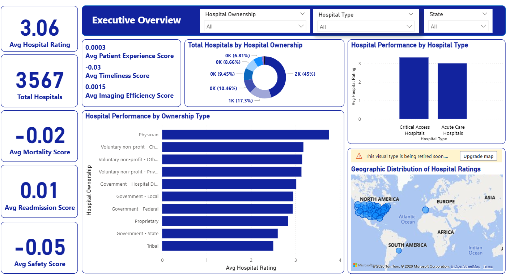
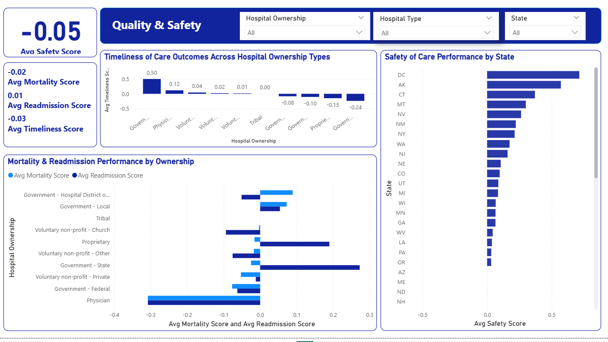
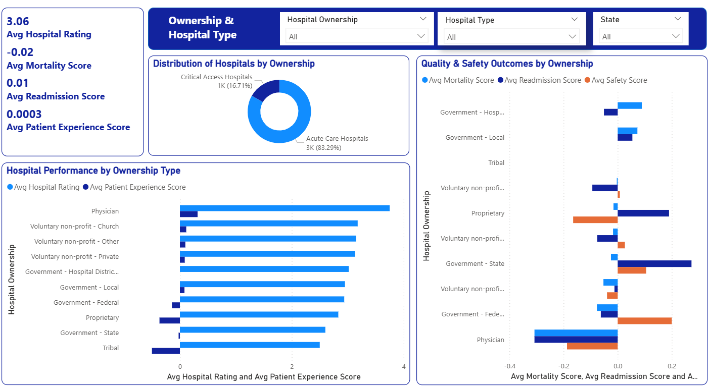
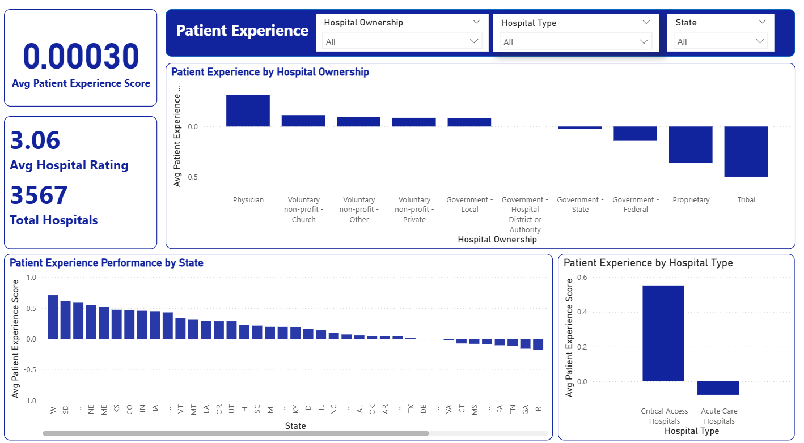

The question
How do hospital performance measures vary across ownership types, hospital categories, and states?
Analytical approach
- Prepared CMS hospital data for interactive analysis using Power Query.
- Developed DAX measures and KPI summaries for ratings, mortality, readmissions, safety, timeliness, and patient experience.
- Designed report pages for executive overview, quality and safety, patient experience, and ownership and hospital type.
Findings & outcomes
- Dashboard covers 3,567 hospitals.
- Analysis surfaces variation in patient experience and quality-related measures across ownership groups and hospital types.
- The project identified stronger patient-experience outcomes in critical access and physician-owned hospitals, alongside quality trade-offs across ownership and hospital categories.
Dashboard preview
Explore the four analytical views from the Power BI report. Select any dashboard to open the full-size screenshot.




Limitations & interpretation
Descriptive analysis does not establish that ownership or hospital type causes better or worse outcomes. Measure definitions, data coverage, and hospital mix matter.